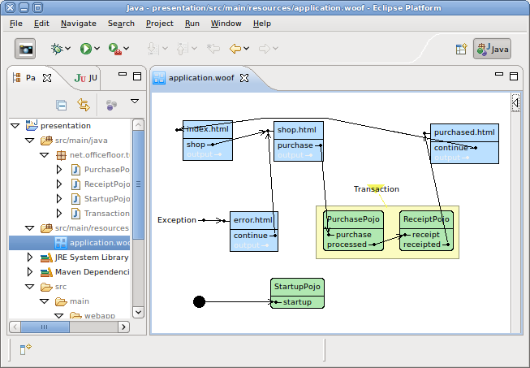
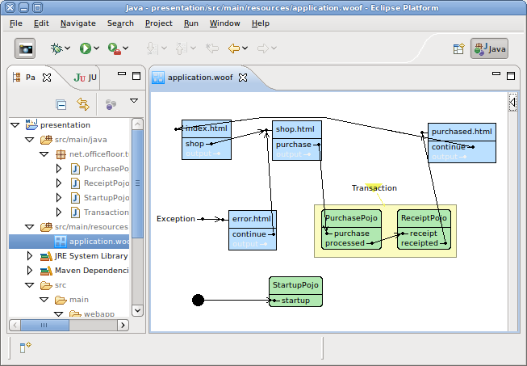
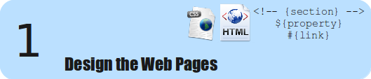
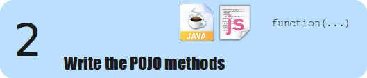
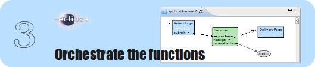

v2.13.0 Moulding the Software Brick for true Inversion of Control
|

OfficeFloor is freely distributed under GPL and the source is available here. |
|
v2.13.0 Moulding the Software Brick for true Inversion of Control
|

OfficeFloor is freely distributed under GPL and the source is available here. |
True Inversion of Control = Dependency Injection + Thread Injection + Continuation Injection
|

Write some HTML OfficeFloor dynamic web pages only require the following 3 non-obtrusive tags:
The reason for using non-obtrusive tags in the OfficeFloor web pages is to allow using WYSIWYG web design tools (e.g. Web Tools Platform, DreamWeaver, KompoZer) to create and edit the web pages. Also reviewers can open the raw web pages in any web browser. This makes for faster feedback loops with the Web Designer enabling the right look and feel for the web application. |

Write some methods The application logic is written with POJOs (plain old Java objects) but with a slightly different focus to many dependency injection frameworks. OfficeFloor injects the dependency as a parameter into the method rather than into the object. This difference is key to OfficeFloor's simplicity yet power! Dependency injection into methods is fundamental to True Inversion of Control as methods are the natural building blocks for managed code. The JEE API's highlight this:
OfficeFloor focuses on the method and its Dependency Injection and the invoking thread (Thread Injection). |

Draw some lines The web pages and POJO methods are connected together via OfficeFloor's function orchestration providing a cohesive web application. OfficeFloor's function orchestration is configured graphically which improves application development by:
No additional coding/configuration is required for function orchestration, as OfficeFloor is built from the ground up with Continuation Injection, allowing development teams to focus on the web pages and POJOs. |
You're ready to go The run anywhere flexibility provided by OfficeFloor's true inversion of control fundamentals means that web applications built with OfficeFloor can be deployed anywhere, including:
The build once run anywhere capability of OfficeFloor provides flexibility to make the best deployment decisions for the web application - both now and in the future. |
|
Eclipse
Install the Eclipse Plug-in and try out OfficeFloor |
Tutorials
Check out the tutorials covering various features of OfficeFloor |
Mission
Read the mission statement of the OfficeFloor team and get involved |
Blog
Get the latest information regarding OfficeFloor |
Help
Get help in using Officefloor |